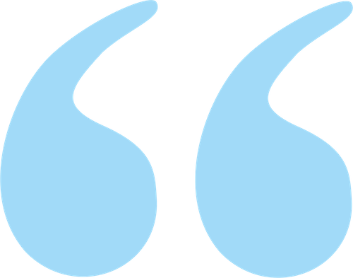

<div class="container">

  <div class="hero">
    <div class="hero-copy">
      
      <blockquote>
        <strong>Coaching and training help you</strong> to get closer to the answers and achieve things you might previously have thought not possible.<br /> <strong>They help you unlock your potential.</strong>
         


      </blockquote>
      <!---->
    </div>
  </div>

  <section id="about">
    <h1>Hi – I’m Alan. I’m a qualified Coach and an experienced, award winning Trainer.</h1>

    <p>I believe we are all capable of so much more. Wherever we want to thrive and really achieve our dreams and ambitions. At work and at home.</p>

    <blockquote class="copy-quote">
      
      Alan is a hugely compassionate man, who approaches each coaching session with kindness and a genuine desire to help both the individual and the organisation. His work with our team has had a huge impact on their happiness. We don’t measure the effectiveness of Alan’s work on productivity, because we genuinely want our team to just be the happiest and best versions of themselves that they can be. We know this isn’t everyone’s bag, and some people need/want a more tangible result. <br />But frankly, whatever your goal is, Alan’s your man

      <footer>
       Alison Weir, Founder, Wonderland Communications
      </footer>
    </blockquote>

    <p><a href={{ "/coaching" | prepend: site.url }}>Coaching</a> helps you to get closer to those answers and achieve things you might previously have not thought possible. It helps you to unlock your potential.</p>

    <p><a href={{ "/training" | prepend: site.url }}>Training</a> helps managers become the confident, supportive manager and leader that unites and leads teams regardless of the level they work at.</p>

    <p>My new training course, <a href={{ "/downloads/theConfidentManager.pdf" | prepend: site.url }}>The Confident Manager</a>, helps transform hesitant, apprehensive, uncertain managers into skilled, effective, assured managers and leaders.</p>

    <p>I deliver <a href={{ "/coachingworkshops" | prepend: site.url }}>Coaching Workshops</a> that introduce the powerful benefits of coaching to managers at all levels to help them to better engage with, and empower, their teams and colleagues.</p>

    <p><a href={{ "/performancecoaching" | prepend: site.url }}>Performance and Executive Coaching</a> is all about achieving goals. I help people across all levels of business to grow, develop and improve in their role, from the first-time manager to the experienced executive.</p>

    <p>I also deliver engaging, dynamic sessions on feedback, managing performance, delivering impactful presentations with confidence and without the nerves, and managing people through change.</p>

    <div class="deck">

      <div class="card">
        <div class="card_heading">
          <h2>Coaching</h2>
        </div>
        <div class="card_copy">
          <p>We are all faced with challenging situations and difficult decisions from time to time. Coaching – many people call it Life Coaching – can help you to understand how you really feel about those situations and decisions and plan how to approach and tackle them.</p>
        </div>
        <a class="card_link" href={{"/coaching" | prepend: site.url}}>Read more</a>
      </div>

      <div class="card">
        <div class="card_heading">
          <h2>Training</h2>
        </div>
        <div class="card_copy">
          <p>The essence of my training is to help colleagues, Managers, Directors and their teams to have better conversations at work. I offer a range of training courses where those conversations are all about leading and managing teams, giving colleagues support and feedback, dealing with difficult situations, or making better, more compelling presentations.</p>
        </div>
        <a class="card_link" href={{"/training" | prepend: site.url}}>Read more</a>
      </div>

      <div class="card">
        <div class="card_heading">
          <h2>Coaching Workshops</h2>
        </div>
        <div class="card_copy">
          <p>Managers can find it challenging to gain the commitment and engagement of their team and effectively manage their performance. My Coaching Workshops introduce managers to coaching-led conversations that help their teams genuinely own the tasks, objectives and challenges they are working to achieve.</p>
        </div>
        <a class="card_link" href={{"/coachingworkshops" | prepend: site.url}}>Read more</a>
      </div>

      <div class="card">
        <div class="card_heading">
          <h2>Performance and Executive Coaching</h2>
        </div>
        <div class="card_copy">
          <p>In business, as in our daily lives, we can get blocked, lose our way or just get so wrapped up in the day to day that we lose sight of what we really want to achieve. Or indeed are expected to achieve. As a Coach, I work to help people in all spheres of business deal with potential stumbling blocks, improve performance, solve problems and accomplish goals.</p>
        </div>
        <a class="card_link" href={{"/performancecoaching" | prepend: site.url}}>Read more</a>
      </div>

    </div>

  </section>

  {% include contact.html %}

</div>
